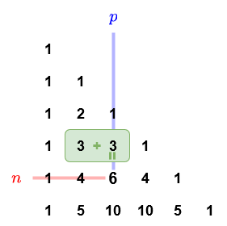
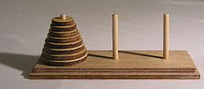

Exercices - La récursivité¶
Notebook d'exercices¶
Notebook sur Capytale
Cliquez sur le lien ci-dessous pour accéder au notebook d'exercices sur Capytale :
Exercice : Triangle de Pascal¶
Le triangle de Pascal (nommé ainsi en l'honneur du mathématicien français Blaise Pascal) est une présentation des coefficients binomiaux sous la forme d’un triangle :

On peut le définir par récurrence de la manière suivante :
avec \(0 \lt p \le n\).
Exercice 1
Écrire une fonction récursive pascal(n, p) qui renvoie la valeur de \(C(n, p)\), le paramètre n étant l'indice d'une ligne et p l'indice d'une colonne du triangle de Pascal.
Correction exercice 1
Exercice 2
Complétez le programme suivant qui affiche le triangle de Pascal sur un nombre de lignes qu'on définira avec une variable globale NB_LIGNES.
Correction exercice 2
Pour rappel, le paramètre end de la fonction print permet de remplacer le retour à la ligne après un affichage par un autre caractère (ici un espace).
Exercice : Les tours de Hanoï¶
Les tours de Hanoï est un casse-tête composé de trois tours et une pile de disques rangés du plus grand au plus petit comme sur la photo ci-dessous :

Le but est de déplacer la pile de disques sur la tour de droite en ne déplaçant à chaque fois qu'un seul disque et un disque ne peut pas être posé sur un disque plus petit. Voici une animation de ce qu'il faut faire dans le cas où il y a 4 disques.
Vous pouvez consulter Wikipédia par exemple pour plus d'informations.
Nous allons voir qu'il est très simple de créer un programme récursif qui nous dit quoi faire pour résoudre le problème. Tout d'abord on appelle les tours A, B et C. On appelle n le nombre de disque présents au départ dans la tour A. Pour déplacer tous les disques de la tour A vers la tour C, on peut raisonner comme suit :
- On déplace
n-1disques deAvers la tourB - On déplace le dernier disque de
AversC - On déplace les
n-1disques deBversC
L'astuce ici est de créer une fonction hanoi qui prend 4 paramètres : hanoi(n,debut,inter,fin) où n est le nombre de disques à déplacer, debut est la tour de départ de nos n disques, inter est la tour intermédiaire que l'on peut utiliser pour déplacer et fin est la tour ou doivent se trouver les n disques au final.
Ainsi, on va initialement appeler hanoi(n,"A","B","C"), et lorsque l'on voudra déplacer les n-1 disques de A vers B, on appelera hanoi(n-1,"A","C","B") .
Exercice
Écrire cette fonction récursive hanoi(n,debut,inter,fin) de manière à afficher (avec print) à chaque étape le déplacement à effectuer sous la forme "A B" pour un déplacement de la tour "A" vers la tour "B" par exemple.
On souhaite :
- donner en entrée :
(n,"A","B","C")oùnest un entier. - obtenir en sortie : Les instructions à suivre pour déplacer les
ndisques de la tour"A"à la tour"C"donnée sous la forme"A B"pour signifier un déplacement deAversBet affiché avecprint.
Autres exercices¶
Exercice 1
Écrire une fonction récursive F(n), où n est un entier positif ou nul, qui affiche n fois le message "Hello world !".
Aide exercice 1
Ici, il faut distinguer :
- le cas général (récursif), lorsque \(n > 0\), auquel cas on affiche le message, puis on appelle récursivement la fonction sur \(n - 1\) (décrémentation de \(n\)) de manière à converger vers le cas de base.
- le cas de base, lorsque \(n = 0\), auquel cas on ne fait rien.
Reprenez le code suivant et complétez les deux lignes manquantes :
Exercice 2
Écrire une fonction récursive somme(n), qui reçoit en paramètre un entier \(n \ge 1\), et qui renvoie la valeur de :
donc :
c'est-à-dire la somme des inverses des carrés des nombres de \(1\) à \(n\).
Aide exercice 2
Trouvons d'abord une définition récursive.
\(S_n\) peut s'écrire ainsi :
Si on exprime \(S_n\) en fonction de \(S_{n-1}\), on peut donc écrire :
On a notre cas général !
Il n'y a plus qu'à trouver un cas de base... Ici, on peut prendre le cas où \(n = 1\).
Si \(n = 1\), \(S_1 = \frac{1}{1^2} = \frac{1}{1} = 1\).
Finalement, on distingue :
- un cas de base, lorsque \(n = 1\), auquel cas on renvoie la valeur de \(S_1\), c'est-à-dire \(1\).
- un cas général sinon, auquel cas on renvoie \(S_{n-1} + \frac{1}{n^2}\).
Exercice 3
Écrire une fonction récursive minR(L), de paramètre L une liste non-vide d’entiers, qui renvoie le plus petit élément de cette liste.